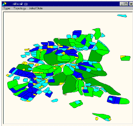

|
Librairie des
modèles développés avec Cormas

Cormas a permis le développement de nombreux modèles.
Nous proposons ici une classification des modèles
existants.
Parmi les applications faisant référence à une
situation concrète et à des données de terrain, on peut
distinguer ceux qui sont centrés sur :
Actuellement, plusieurs projets de modélisation
participent à l'élaboration d'une démarche d'usage des
simulations multi-agent en interaction avec des jeux de rôles dans un but
d'aide à la discussion et à la concertation entre
acteurs impliqués dans des problèmes de gestion de
ressources communes.
Les modèles théoriques
traitent de questions de ressources naturelles de façon
très abstraite, même si des situations concrètes ont pu
les inspirer. Les modèles
didactiques ont été conçus pour l'apprentissage de
Cormas. Les modèles couplés
ont nécessité le couplage de Cormas avec d'autres outils
(systèmes d'informations géographiques, base de données,
autres modèles)
Outre ce classement thématique, visitez la liste
alphabétique de tous les modèles.
|